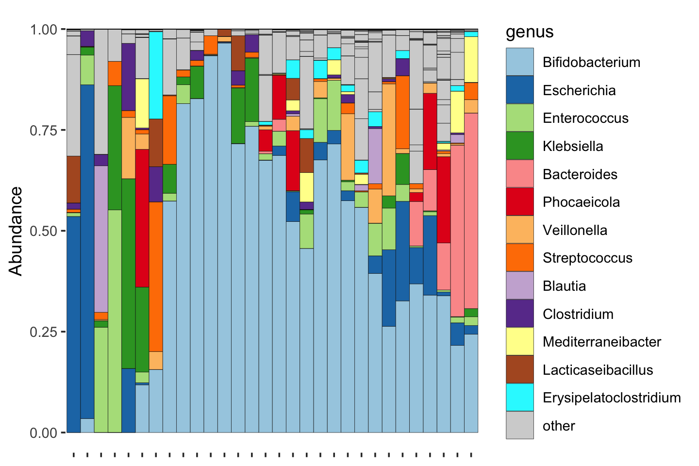
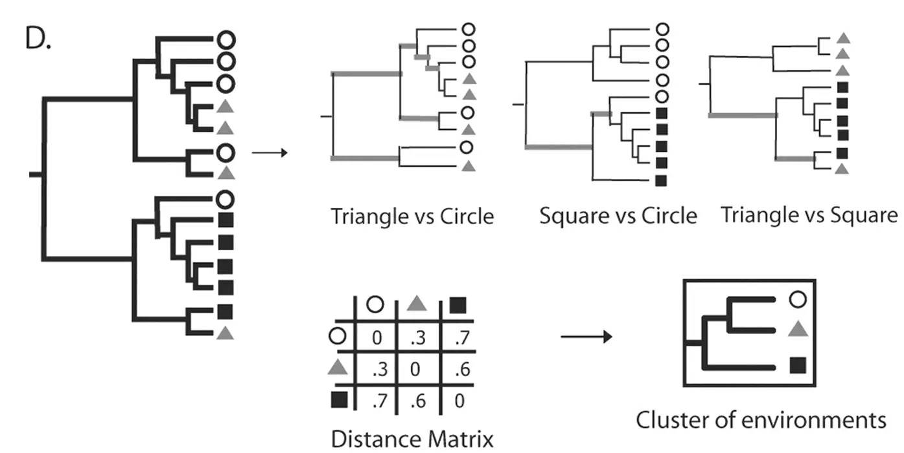
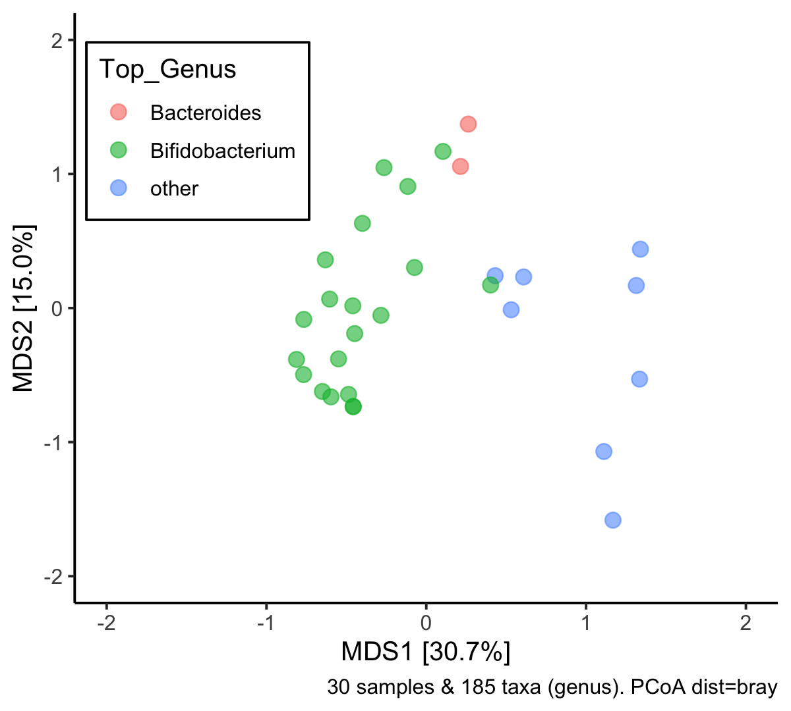
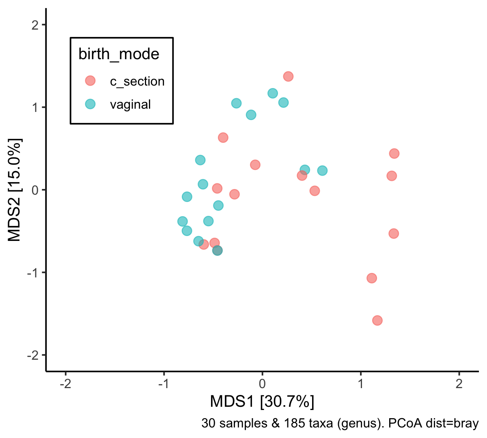
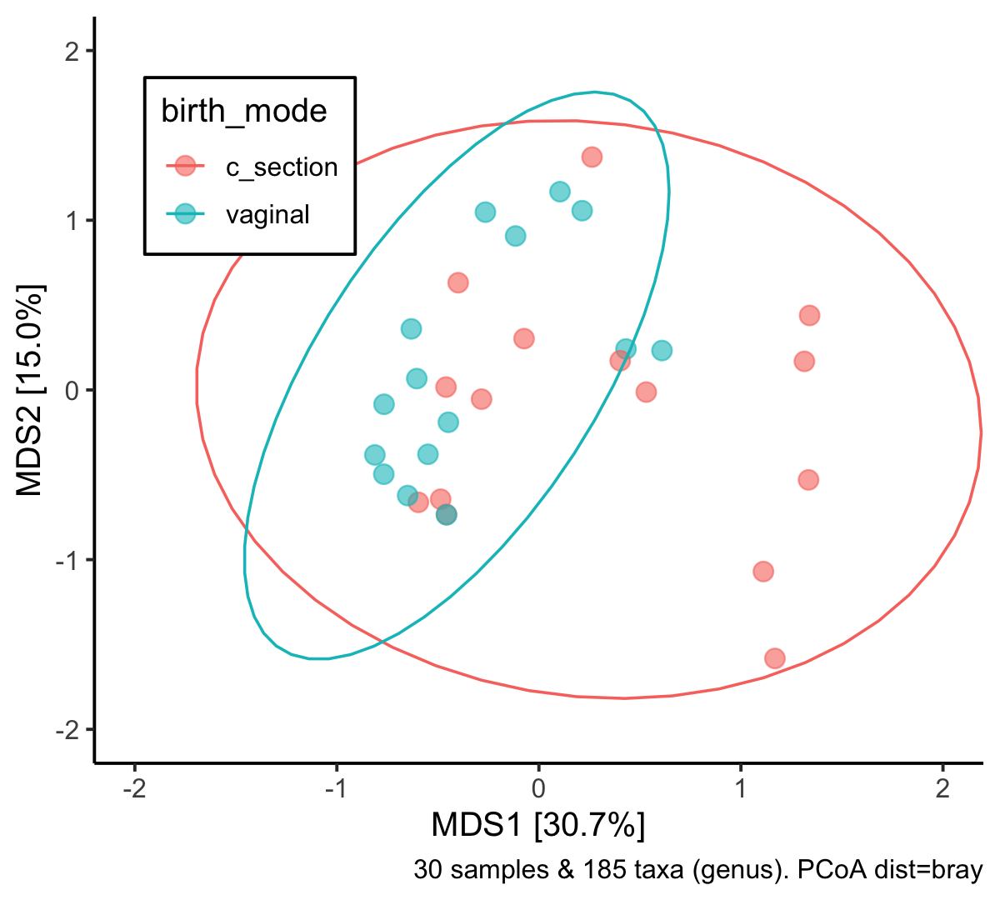
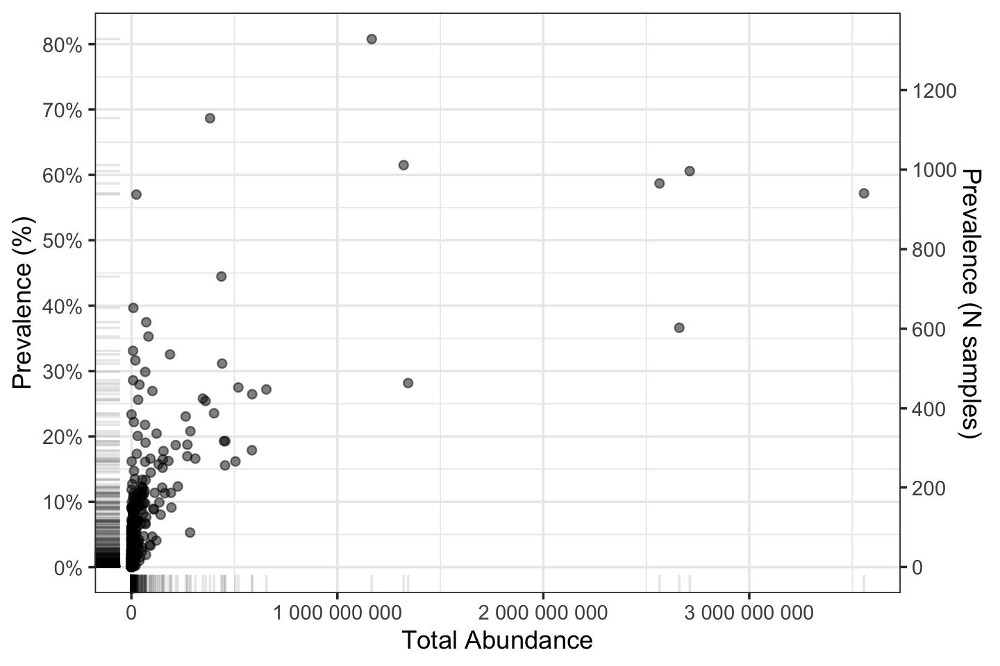
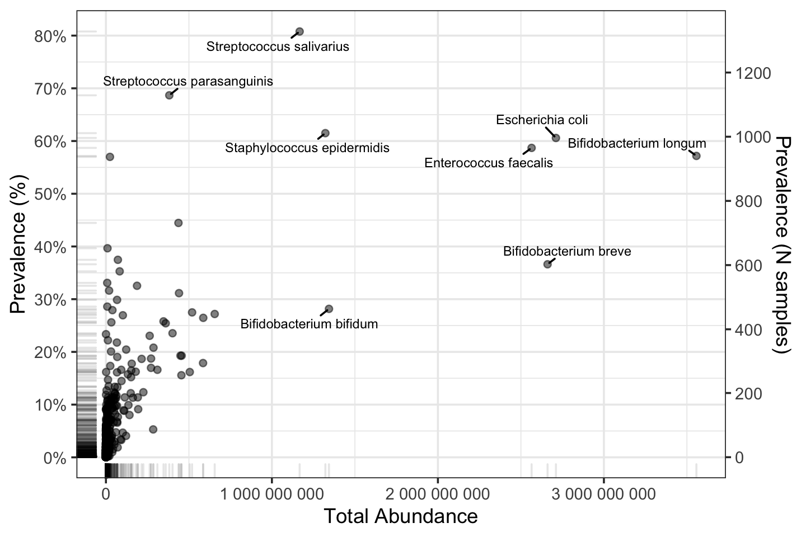
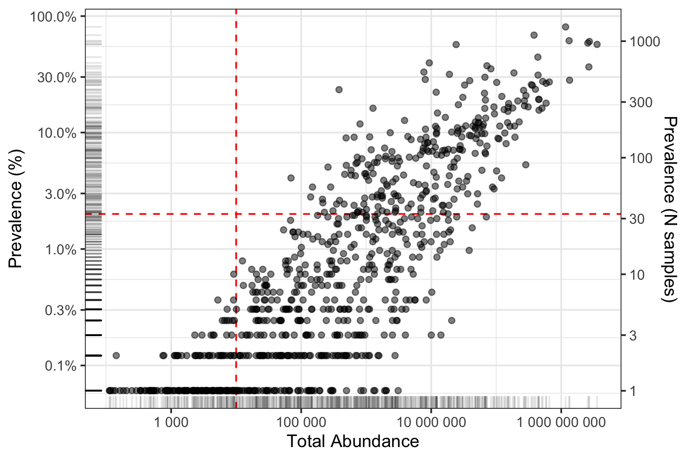
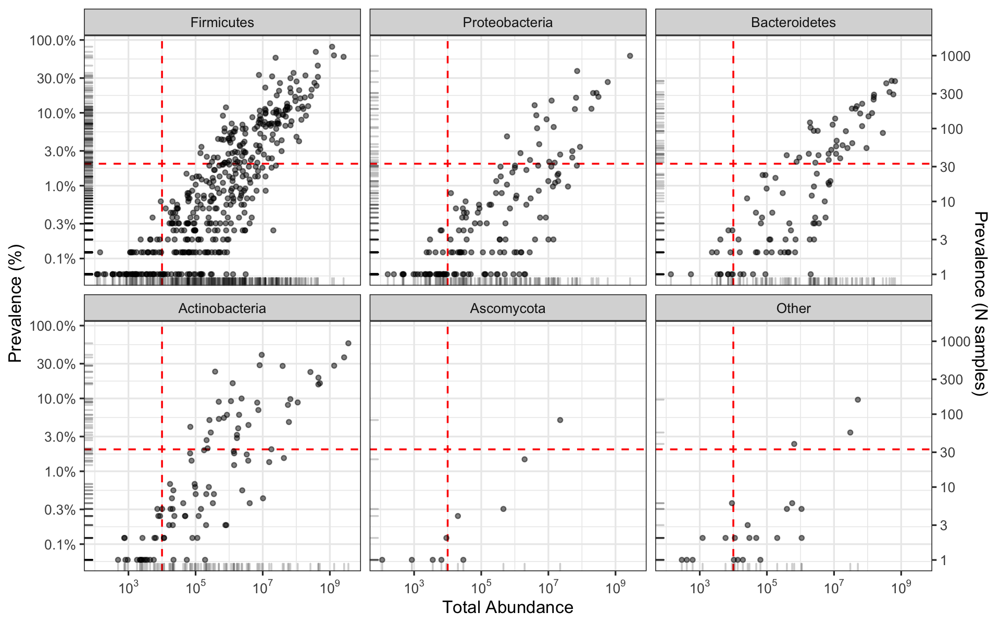

Microbiome data analysis with microViz
David Barnett
Part 2: Dissimilarity
From Diversity to Dissimilarity
- Alpha diversity:
- Summarizing one sample
- “How diverse is this ecosystem?”
- Dissimilarity:
- Comparing a pair of samples
- “How different are these two ecosystems?”
A new dataset
phyloseq-class experiment-level object
otu_table() OTU Table: [ 819 taxa and 1644 samples ]
sample_data() Sample Data: [ 1644 samples by 11 sample variables ]
tax_table() Taxonomy Table: [ 819 taxa by 6 taxonomic ranks ]
phy_tree() Phylogenetic Tree: [ 819 tips and 818 internal nodes ]- Infant gut microbiome cohort study: Shao et al. 2019
- Shotgun metagenomic sequencing data: Illumina HiSeq
- Species resolution taxonomy: metaphlan3
What is dissimilarity?
What is dissimilarity?
Quantifying dissimilarity?
- There are many ways
- We’ll look at a few popular ones
Dissimilarity measures - qualitative
Dissimilarity measures - quantitative

Dissimilarity measures - phylogenetic
UniFrac distance: Fraction of the branch length of the phylogenetic tree that leads to taxa from either one environment (sample) or the other, but not both.
Lozupone and Knight 2005
Dissimilarity measures - phylogenetic
- Weighted UniFrac distance: branch lengths are weighted by the relative abundance of sequences in each community (sample)
- Generalized UniFrac (not shown): partial abundance weighting - Chen et al. 2012
Lozupone et al. 2007
Why quantify dissimilarity?
- To put our samples in order
- This helps us see patterns in our data
- But we can do more than just sort a bar chart!
Ordination with PCoA
“Principal Co-ordinates Analysis” (aka MDS - multi-dimensional scaling)
From distance matrix to new dimensions
B01406_ba_337 B01600_ba_21 B01627_ba_310 B01664_ba_301 B01782_ba_288 B01784_ba_21 B01851_ba_273 B02211_ba_214
B01406_ba_337 0.0000000 0.6275259 0.5131096 0.5602851 0.6137248 0.9711781 0.3666865 0.5608648
B01600_ba_21 0.6275259 0.0000000 0.4246706 0.3489344 0.7835414 0.9542480 0.6439534 0.3174279
B01627_ba_310 0.5131096 0.4246706 0.0000000 0.4076857 0.8137584 0.9774879 0.6400964 0.4033656
B01664_ba_301 0.5602851 0.3489344 0.4076857 0.0000000 0.7882974 0.9375888 0.6027129 0.3598398
B01782_ba_288 0.6137248 0.7835414 0.8137584 0.7882974 0.0000000 0.9700094 0.6446653 0.7972933
B01784_ba_21 0.9711781 0.9542480 0.9774879 0.9375888 0.9700094 0.0000000 0.7945886 0.9847860
B01851_ba_273 0.3666865 0.6439534 0.6400964 0.6027129 0.6446653 0.7945886 0.0000000 0.5698933
B02211_ba_214 0.5608648 0.3174279 0.4033656 0.3598398 0.7972933 0.9847860 0.5698933 0.0000000
B02218_ba_223 0.5998444 0.2442619 0.3493601 0.2973394 0.7971474 0.9416503 0.6099786 0.3147750
B02255_ba_21 0.8538117 0.8200495 0.8231758 0.7611237 0.8188012 0.8749968 0.8403020 0.8425275
B02258_ba_21 0.6227093 0.1732372 0.4254440 0.3792266 0.8617622 0.9796544 0.6324547 0.3110426
B02317_ba_205 0.6884194 0.6588944 0.5757901 0.4987246 0.7778045 0.7711461 0.4989296 0.6827537Ordination with PCoA
“Principal Co-ordinates Analysis” (aka MDS - multi-dimensional scaling)
From distance matrix to new dimensions
Ordination with PCoA
“Principal Co-ordinates Analysis” (aka MDS - multi-dimensional scaling)
From distance matrix to new dimensions
shaoSubset %>%
ps_calc_dominant(
rank = "genus", n_max = 2, var = "Top_Genus", threshold = 0.2
) %>%
tax_agg(rank = "genus") %>%
dist_calc(dist = "bray") %>%
ord_calc(method = "PCoA") %>%
ord_plot(
alpha = 0.6, size = 3, color = "Top_Genus"
) +
theme_classic(12) +
coord_cartesian(xlim = c(-2, 2), ylim = c(-2, 2)) +
theme(
legend.position = c(0.175, 0.8),
legend.background = element_rect(colour = "black")
)
Ordination with PCoA
“Principal Co-ordinates Analysis” (aka MDS - multi-dimensional scaling)
From distance matrix to new dimensions
shaoSubset %>%
tax_agg(rank = "genus") %>%
dist_calc(dist = "bray") %>%
ord_calc(method = "PCoA") %>%
ord_plot(
alpha = 0.6, size = 3, color = "birth_mode"
) +
theme_classic(12) +
coord_cartesian(xlim = c(-2, 2), ylim = c(-2, 2)) +
theme(
legend.position = c(0.175, 0.8),
legend.background = element_rect(colour = "black")
)Ordination with PCoA
“Principal Co-ordinates Analysis” (aka MDS - multi-dimensional scaling)
From distance matrix to new dimensions
shaoSubset %>%
tax_agg(rank = "genus") %>%
dist_calc(dist = "bray") %>%
ord_calc(method = "PCoA") %>%
ord_plot(
alpha = 0.6, size = 3, color = "birth_mode"
) +
theme_classic(12) +
coord_cartesian(xlim = c(-2, 2), ylim = c(-2, 2)) +
theme(
legend.position = c(0.175, 0.8),
legend.background = element_rect(colour = "black")
) +
stat_ellipse(aes(color = birth_mode))
PERMANOVA
- Permutational Multivariate ANOVA (ANOVA: ANalysis Of VAriance)
- Does the average microbiome composition differ by birth mode?

shaoSubset %>%
tax_agg(rank = "genus") %>%
dist_calc(dist = "bray") %>%
dist_permanova(variables = "birth_mode") %>%
perm_get() %>%
broom::tidy()# A tibble: 3 × 6
term df SumOfSqs R2 statistic p.value
<chr> <dbl> <dbl> <dbl> <dbl> <dbl>
1 birth_mode 1 0.591 0.0861 2.64 0.009
2 Residual 28 6.27 0.914 NA NA
3 Total 29 6.86 1 NA NA Dimensionality reduction?
- PCoA axes are ordered in decreasing amount of variation explained
- Only use or look at the first few = “dimensionality reduction”
Ordination - interactive
This ordination thing is nice, but I can’t see the compositions directly…


Filtering taxa
But before you get to that fun stuff, we need to talk about filtering!
Rare taxa - problems
Rare taxa might be:
- Sequencing errors
- Statistically problematic
- Biologically irrelevant
Rare taxa - what is rare?
Two main concepts:
- Low prevalence - taxon only detected in a small number of samples in your dataset.
- Low abundance - relatively few reads assigned to that taxon (on average or in total)
Filtering - prev/abund plot
Filtering - labelled
Filtering - log transform
Filtering - phylum facets
Filtering - thresholds?
How to pick a threshold?
Depends on what analysis method you are filtering for!
- alpha diversity = DO NOT FILTER
- beta diversity = relevance of threshold depends on your distance measure (next topic!)
- differential abundance testing = stringent filtering, prevalence >5%, >10%? (last topic!)